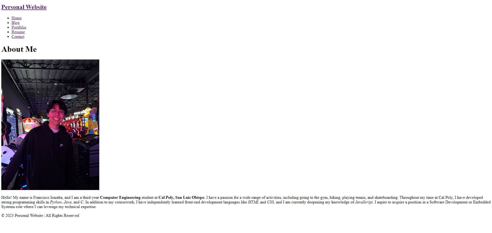

Portfolio

Personal Website
In the process of designing and developing this fully responsive website from scratch, I utilized HTML, CSS, and Git for version control. Through this project, I gained a deep understanding of HTML for structuring content and CSS for creating visually appealing and interactive layouts. Additionally, I mastered Git, which allowed me to efficiently manage my project’s source code, track changes, and collaborate effectively
LEARN MORE